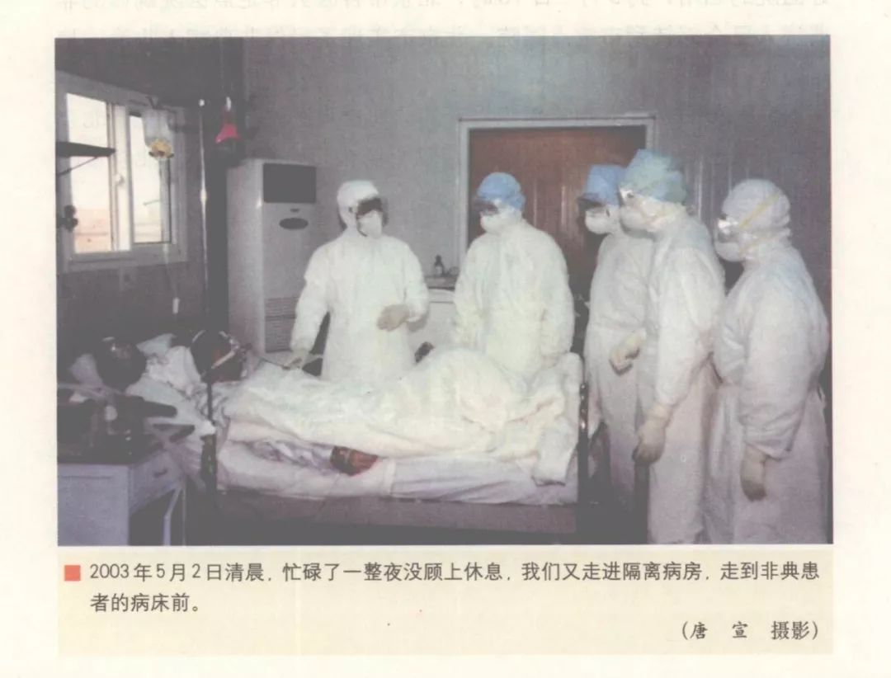
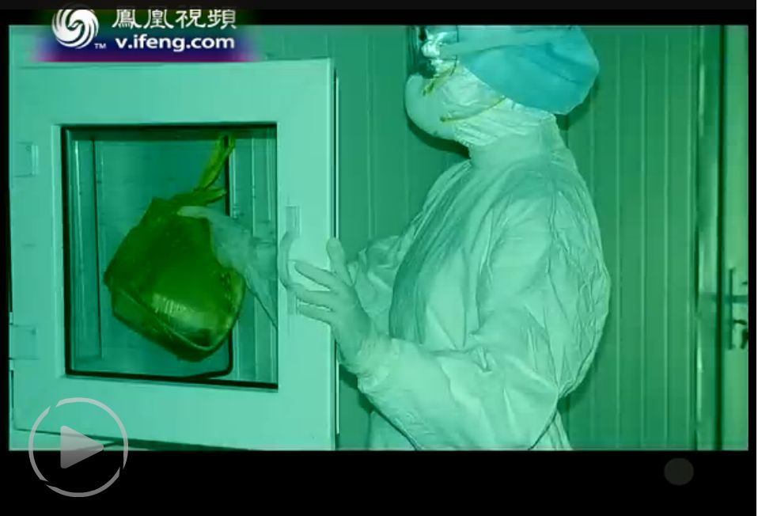
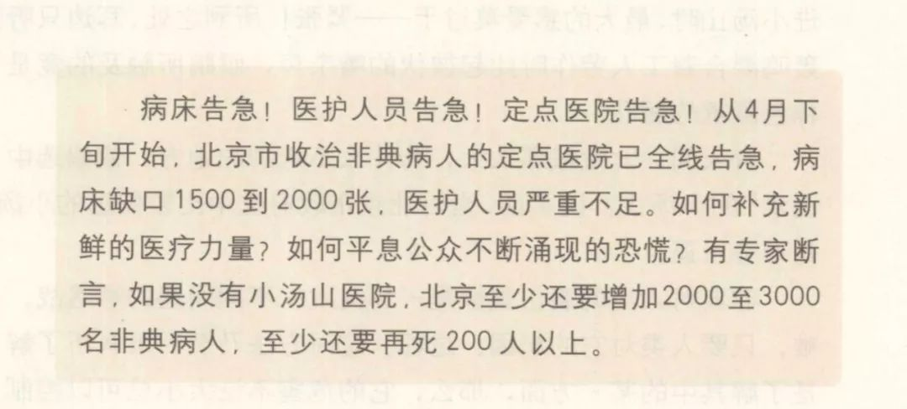

除夕夜，写下“请战书”的小汤山非典医疗队驰援武汉 | 对话
原文链接 备份链接 ********** *****“我们小汤山队员有充分的防护经验，做到了医务人员零感染，可以介入，给大家提供帮助。经过小汤山锻炼的医生，更应该站出来，听调令。我们需要发声，表达我们的意愿。”***** 出征前的郭亚 …


武汉正在该市蔡甸区职工疗养院，紧急设计建设一个有1000个床位的临时医院，用于集中收治新型冠状病毒肺炎患者。临时医院计划在2月3日前投入使用。
这是学“小汤山模式”。2003年，北京7天建成小汤山医院，接收680名非典病人，其中672人康复出院，8人不幸去世，治愈率接近99%，而且1383名医护人员零感染。
小汤山对不同的患者进行个体化治疗，最关键环节是确认何时需要加大药物剂量，何时需要使用特效激素。
医院严格区分了为医务人员的区域、病人的区域、后勤保障的区域，并建立严格且细致的制度，以此减少感染的可能。
时任小汤山医院院长张雁灵说，如果没有小汤山医院，北京至少还要增加2000至3000名非典病人，至少还要再死200人以上。

武汉也要建一个“小汤山医院”了，作为收治新型冠状病毒肺炎患者的定点医院。
1月23日消息，武汉市政集团接到紧急任务，在武汉市蔡甸区职工疗养院的项目征地上，建一个70亩地（2.5万平方米），有1000个床位的临时医院，预计6天完工。医疗设备于2月1日开始穿插安装。临时医院计划在2月3日前投入使用。
临时医院由中建三局承建，武汉中信设计院被紧急召回，需要24小时内出图。1月23日晚，武汉中信设计院设计人员已经连夜加班赶图。
截至1月23日24时，国家卫生健康委收到29个省（区、市）累计报告新型冠状病毒感染的肺炎确诊病例830例，其中重症177例，死亡25例，其中湖北省24例、河北省1例。已治愈出院34例。20个省（区、市）累计报告疑似病例1072例。
其中1月23日一天，27个省（区、市）报告新增确诊病例259例，新增死亡患者8例。新增治愈出院6例。19个省（区、市）报告新增疑似病例680例。疫情还处于上升期。
2003年，小汤山医院也是在北京SARS疫情最严峻的时期动工的，并被认为是疫情防控的一个转折点。
那是2003年4月下旬。4月20日，王岐山出任北京市代理市长，国务院副总理吴仪兼任卫生部长，高强任卫生部党组书记。而北京确诊非典病例从19日的37例猛增至339例，并在随后的几天里继续以每天超过100例的速度增长，到了30日，已达到1440例。
患者猛增的同时，医护人员也在不断被感染，30日累计的1440例病例中，包含医护人员270例。最严重的北京大学附属人民医院，共93名医护人员被感染，不得不于4月24日封院。
当时北京收治SARS病人的医院全线告急，病床缺口1500到2000张。小汤山医院院长张雁灵后来接受采访时说，“当时给我的感觉是很可怕，病人已经多到了没有地方容纳的地步，甚至治疗病人的医生也在不断倒下。”
但也是在4月30日，转折点来了。4月22日才批复、23日才动工的小汤山医院在这一天开始接收病人了。
从这一天开始到6月20日，小汤山医院接收680名非典病人，是全球病例的十分之一、中国病例的七分之一，其中672人康复出院。堪称奇迹的是，参与治疗和护理的1383名医护人员没有一人被感染。
 △ 图片来源：《回望小汤山》截图
△ 图片来源：《回望小汤山》截图
临危受命，7天建成的传染病医院
小汤山医院原本是一座疗养院，建设为SARS定点医院是临危受命。
2003年4月22日，在北京防治非典工作联席会议上，疾控中心的专家建议，医院已经不够用了，可以考虑征用疗养院，比如条件比较好的小汤山疗养院。
卫生部副部长朱庆生和北京市副市长刘敬民随即前往小汤山，和专家在实地勘察之后发现，小汤山是一块建设新医院的好地方——它离最近的居民点500米，虽然疗养院本身只有200张床位，可是旁边有一大片预留的发展用地，而且它四周环境空旷，便于机械化的施工。另外京密引水渠在小汤山疗养院北面4公里处，污水可以经过专门处理，不会影响到北京市的水源。
于是，军地双方一拍即合，新建的传染病医院选址小汤山，决策、研究、勘察、拍板到开工，一天之内完成。
4月23日到4月30日，7000多工人经过了七天七夜的紧急施工，能够容纳1000张床位的小汤山非典定点医院建成了。
与此同时，来自全国各大军区114所医院的1383名医护人员，陆续进驻。
张雁灵4月29日才接到担任小汤山医院的通知，之前他是白求恩军医学院院长，当时正在国防大学进修。当他和搭档小汤山医院政委徐达穗离开国防大学时，他回头看了看校门，徐半开玩笑半认真地问：“张院长，你看什么呀，是不是怕回不来了啊！”
这个问题，对所有奉命前往小汤山医院的医护人员都是一个未知数。怎么样才能提高患者治愈率、确保医护人员零感染？

△ 图片来源：《回望小汤山》截图
对不同患者进行个体化治疗
7天建成的小汤山医院给患者的第一感知是偏僻的几排平房。
张雁灵在《回望小汤山》中写道，有的病人下车后死死抓住车把手，一位40多岁的女患者，下了车就靠着墙哭：“这是医院吗？是正规治疗吗？你们能治好我的病吗？为什么把我们弄到荒郊野外？是不是‘死亡集中营’？是不是拿我们做‘731试验’？”
把充满疑虑的病人劝到病房不难，但怎么治好他们的病就是一个难题。
张雁灵回忆，有媒体很直率地问我：小汤山医院这样一所类似野战化条件的医院，能有信心和把握救治好非典患者吗……谁都知道：非典没有特效药。
据《回望小汤山》记载，680名非典患者刚入院时，发热的占98%以上，其中持续38摄氏度以上的占48%；高龄患者113名，患者中年龄最大的79岁，最小的却只有13岁；所有病人肺部病变和临床症状非常明显，且大多数处于病变发展期，传染性强，危险性大。有外电曾评论说：小汤山医院就是中国的SARS病毒库，说不定哪天就会突然爆炸。
为了提供有效的治疗，医院从各军区医院抽调34位教授组成救治专家指导组和救治咨询专家组，改变过去三级查房的一贯做法，直接分工每位专家与2至4个临床科室挂钩，采取集体会诊、下病区查房等相结合的方式，最大效能发挥专家教授的救治作用，对不同的患者进行个体化治疗。
医院根据国家卫生部下发的非典治疗指导方案，结合国内外治疗非典的成功经验，又成立了由21名专家教授组成的，涉及消化、心内、肾内、泌尿、耳鼻咽喉等16个专业的基础疾病专家会诊组，注重抓好非典患者基础疾病的诊治和危重患者的救治，先后成功探索出“早干预、重支持、抗感染、慎激素、调心理、勤观察”的“小汤山综合治疗方案”，研制出针对不同患者的“非典一号方”、“非典二号方”、“非典三号方”。其中最关键的环节是何时需要加大药物剂量，何时需要使用特效激素甲泼尼龙。
SARS病毒不仅对人的身体器官造成严重损害，而且对患者的心理带来很大创伤。小汤山医院收治的患者中，有70多人入院之初就产生过轻生的念头，有些不但不配合治疗，还打骂医护人员，甚至揭医护人员的口罩。为了帮助他们治疗，医院也成立了心理咨询中心。
最终，入院患者中，除8人因多种并发症不治死亡，其余全部康复出院，治愈率接近99%。
医护人员零感染的背后
提高治愈率之外，医护人员可能面临的感染是另一项艰巨的挑战。据后来的统计，非典期间中国内地累计病例5327例,医护人员占20%左右；死亡349人，医护人员差不多占三分之一。
“市里的医院接待能力有限，消毒设备也不完备，会导致病毒进一步的传播。”北京小汤山医院一位老员工这样形容当时防控疫情所面临的尴尬处境。而紧急建成的小汤山医院，“防护基本以物理隔离为主，严格区分了为医务人员的区域、病人的区域、后勤保障的区域，以此减少感染的可能。”
整个院区被分为三块，新建成的病区是控制区，医护人员的居住区域是缓冲区域，行政和后勤的办公区域是清洁区，各个区域的人员分区活动，防止污染的扩散。而在病区内则采取了更为严格的隔离防护措施。病房、医护人员、物品等严格分开，病房设有双层玻璃的送饭口，病人和医护人员的通道也各不相同，病人是通过病房门前半开放式的走廊通道进出病房，而医护人员则是从专用的工作通道进出。工作人员从清洁区到病房污染区，要经过几道的消毒，三次更衣。

△ 双层玻璃的送饭口，图片来源：凤凰卫视视频截图
为保护医院周围的环境不受污染，医院专门新建了污水处理站。病人的衣服、床单出来了以后先通过环氧乙烷消毒，消毒以后才拿去清洗，清洗后的水再进入到污水站处理。此外还有专门的垃圾处理装置对废弃物进行焚烧处理。
当然，加急建成的小汤山医院仍然存在问题，根据《非典十周年祭》的记录，病房设计和内部结构离现实需要还有很大差距，个别病房窗户还没有安装，病床缺的很多，有的病区门甚至还锁不上，下水道堵塞，尤其令人担心的是，隔离病房的密封性不够，容易造成医护人员感染。但“防护条件比其他市里的医院好”。
物理隔离条件只是一个基础，更重要的是医护人员操作过程如何避免感染。
据《回望小汤山》所载，医院出台了《院内预防感染工作规则》、《出入流程》、《防护守则》，共计3章24节，约8000字，印刷成46页的小册子，全院人手一册。包含了医护人员的防护穿戴、与病人的交谈距离、洗手要达到3分钟、会议要在室外、洗澡流程、清洁程序、垃圾处理条例、生活区行为守则等等。甚至包括交通规则：医护人员在各区之间的行走路线，在污染区面对面行走时如何避让等等。还规定：违反者将受到通报批评，严重者以军法惩处。
医院甚至与各大单位带队领导、各病区主任、护士长签订《预防院内感染军令状》，明确规定履行了如何奖励，违反了如何惩罚，明示“如果发生感染，就地免职；退回原单位”。
为了监督医护人员遵守制度，医院设立专职督导员，负责时时、处处监控所有人员，包括防护服怎么穿、口罩怎么戴、眼罩怎么戴、出污染区怎么摘手套等等具体而细致的环节。
在软硬件都进行特殊对待下，小汤山医院真的做到1383名医护人员零感染。
6月23日清晨，小汤山首批900名医疗队员从北京撤离。一天后，世界卫生组织在日内瓦总部宣布，北京从SARS疫区名单中删除。小汤山康复医院的一位原副院长回忆起这段经历，忙的时候连轴转，到最后一天，觉得就像是卸掉了一个重任，“终于结束了。”
张雁灵在书中写道，2003年5月26日，北京组织召开的非典定点医院院长会议上，时任北京市代市长王岐山对他说：“自从小汤山开始收治病人，北京市的老百姓心里就踏实了”。

△ 图片来源：《回望小汤山》截图
张雁灵还在书中引用了一句话：“有专家断言，如果没有小汤山医院，北京至少还要增加2000至3000名非典病人，至少还要再死200人以上”。
谭卓曌 吴晔婷|撰稿
王吉陆|责编


2003年SARS，上海1700万人仅8人感染，怎么做到的？
武汉肺炎疫情更新（1.22）：全国确诊440例，三地出现人传人的“二代病例”

我们尊重原创版权，未经允许请勿转载。
授权转载
郑琪 微信号: 1281949389
商务合作
上海：leslee 13916263824
北京：Jessie 13911125922
线索爆料、意见反馈，加入核心读者社群
请扫码联系健闻君

让朋友们看到你也在看
↓↓↓
原文链接 备份链接 ********** *****“我们小汤山队员有充分的防护经验，做到了医务人员零感染，可以介入，给大家提供帮助。经过小汤山锻炼的医生，更应该站出来，听调令。我们需要发声，表达我们的意愿。”***** 出征前的郭亚 …
原文链接 备份链接 七家二级医院被征用，成为收治新型冠状病毒患者的定点医院，但医护人员防护设备紧缺，隔离病房仍未完工。初露端倪的临时医院，最快也要六天才能建成 文 |《财经》信娜 陈晶 房宫一柳 实习记者 朱贺 编辑 | 王小 “到底什么 …
原文链接 备份链接 口述 | 许平 记者 | 王珊 从2019年12月31日到现在，我所在医院的病人越来越多了，以发热门诊为例，目前每天病人的体量已经是医院平常病人数的10多倍，我们医院还在距离市中心比较偏的医院。冬季本身就是流感高发季， …
原文链接 备份链接 “医务人员，有很多做公共工作的（职业），一个人得病以后可能传染很多人。”国家卫健委高级别专家组成员曾光提醒，“所以每个行业都得行动起来，千万别带病工作、带病旅游，这是非常危险的。” 全文4811字，阅读约需8分钟 ▲ …
原文链接 备份链接 昨天除夕夜，我们收到了一份沉甸甸的读者来信。信件是由一名父亲写给他远在重庆老家的孩子。这个春节，他们夫妻二人作为浙江前线医护人员，为了对患者负责，放弃了与家人团聚的时间。他们没时间感叹，也来不及思恋，昼夜奋战在疫情一 …